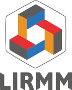

Digits Architectures Logiciels Informatique 
Arithmétique des Ordinateurs, Architecture, Micro-architecture des Processeurs, Simulation d'unités de calcul, Validation numérique, Analyse d'erreurs, Transformation sémantique de programmes, Analyse statique, Interprétation abstraite, Cryptographie, Calcul haute performance, Systèmes hybrides.
L'équipe DALI est constituée de 2 professeurs, 4 maîtres de conférences dont 2 HDR et 4 doctorants, post-doctorants ou ATER.
Les activités de DALI se structurent autour d'actions de recherche qui partagent l'objectif commun d'améliorer la qualité numérique et les performances du matériel comme du logiciel ainsi que la sécurité des opérateurs cryptographiques.
L'équipe DALI développe une thématique de recherche unifiée afin d'améliorer la qualité; numérique et la haute performance des calculs. DALI permet l'interaction, rare en France au sein d'une même équipe, d'experts en architecture et micro-architecture, simulation et compilation et arithmétique des ordinateurs.
Côté; performances, nous nous intéressons plus particulièrement à la multiplication des coeurs (parallélisme de tâches) et à l'augmentation du parallélisme d'instructions. La qualité numérique des applications de calcul scientifique et la séretée; de fonctionnement d'applications embarquées critiques dépendent crucialement de la maîtrise des effets de la précision finie des calculs-et de l'arithmétique flottante en particulier. Il s'agit lors de contrôler et valider les calculs (algorithmes, codes) mais aussi d'améliorer et optimiser la précision numérique des calculs et des résultats. Certaines applications, en calcul scientifique en particulier, nécessitent d'améliorer la qualité; numérique des applications sans pour autant sacrifier la rapidité; de l'exécution. Ainsi se rejoignent amélioration de la performance et de la qualité; numérique.
Rapport d'activités 2013-2016, Conseil Scientifique du LIRMM, janvier 2017 [pdf]
Rapport d'activités 2010-2013, AERES, 2014 [pdf]
Fiche synthétique de présentation 2010 [pdf]
Rapport d'activités 2005-2009 [pdf]
Présentation DALI au comité de visite AERES, décembre 2009 [pdf]
Rapport d'activités 2005-2009 [pdf]
Rapport d'activités 2003-2006 [pdf]
Rapport d'activités 2003-2004 [pdf]